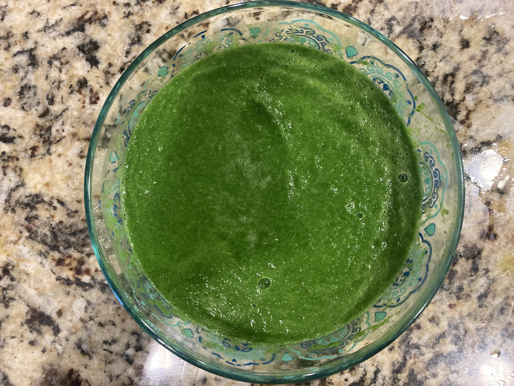
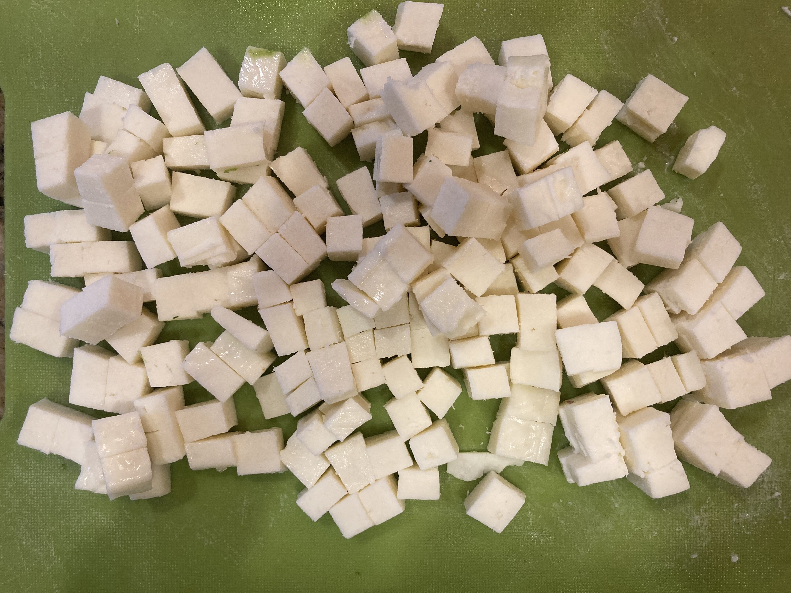
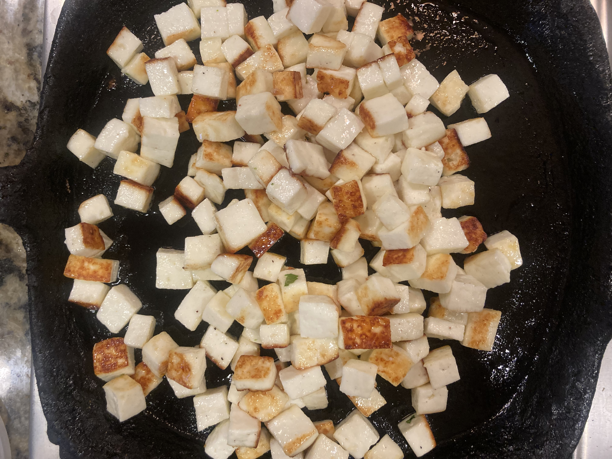
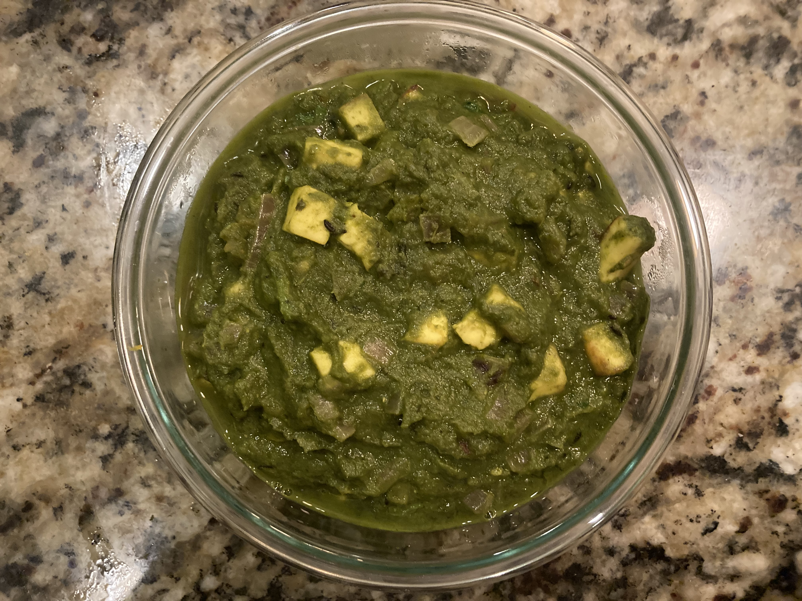

Description
A simple and most delicious Paneer Spinach recipe perfect for lunch or dinner. It's great for rotis or rice.
Ingredients
- 5 cup water
- Palak or Mustard Greens 1 bunch
- Half onion chopped
- Half tomato chopped
- 1 inch ginger
- 1 or 2 garlic cloves
- 3 chillies
- Paneer Diced
- 1 tsp cumin
- 4 cloves
- 2 pods cardamom
- 2 bay leaves
- 2 tsp kasuri methi
- 1 tsp Garam Masala
- 2 tbsp CREAM
For paste :
- Blanch bunch of spinach for 2 mins in 5 cup water. Drain the spinach from water.
- put blanched spinach in cold water for 2 to 3 mins to retain color.Seperate spinach.
- Make paste with ginger , garlic, chilies and blanched spinach
- Keep aside in a bowl
Instructions
- Heat a pan and pour 1tbsp of oil and 1tbsp butter.
- Add cumin seeds ,cloves,cardmom, 1 tsp kasuri methi and bay leaves. Saute for 1 min.
- Add chopped onion and saute til it turns golden brown.
- Add Tomato and saute til soft and mushy.
- Now add spinach paste ,1/4 cup water and 3/4 tsp salt to the pan.
- Mix well and Adjust consistency.
- Add Fried paneer cubes and mix well.
- Cook on sim for 5 mins.
- Add 1/4 spoon Garam masala,1 tsp cream and 1 tsp kasuri methi. Mix well.
- Serve hot with rotis or rice.